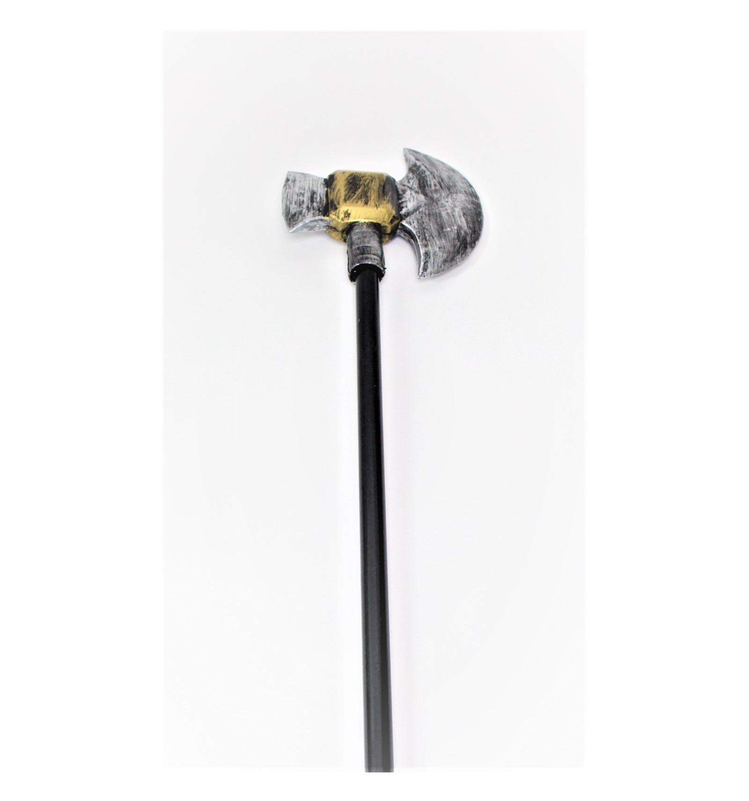
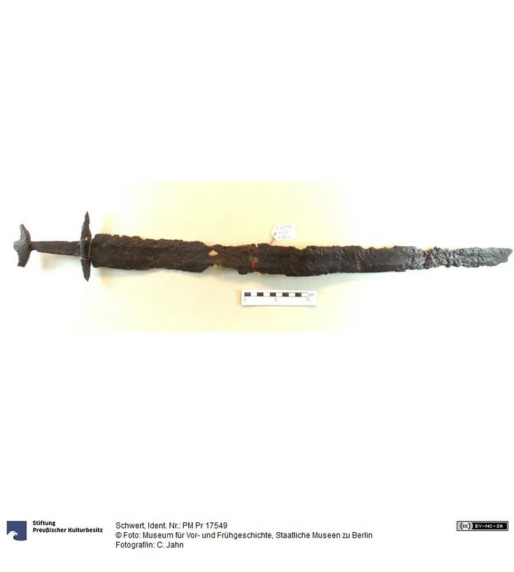
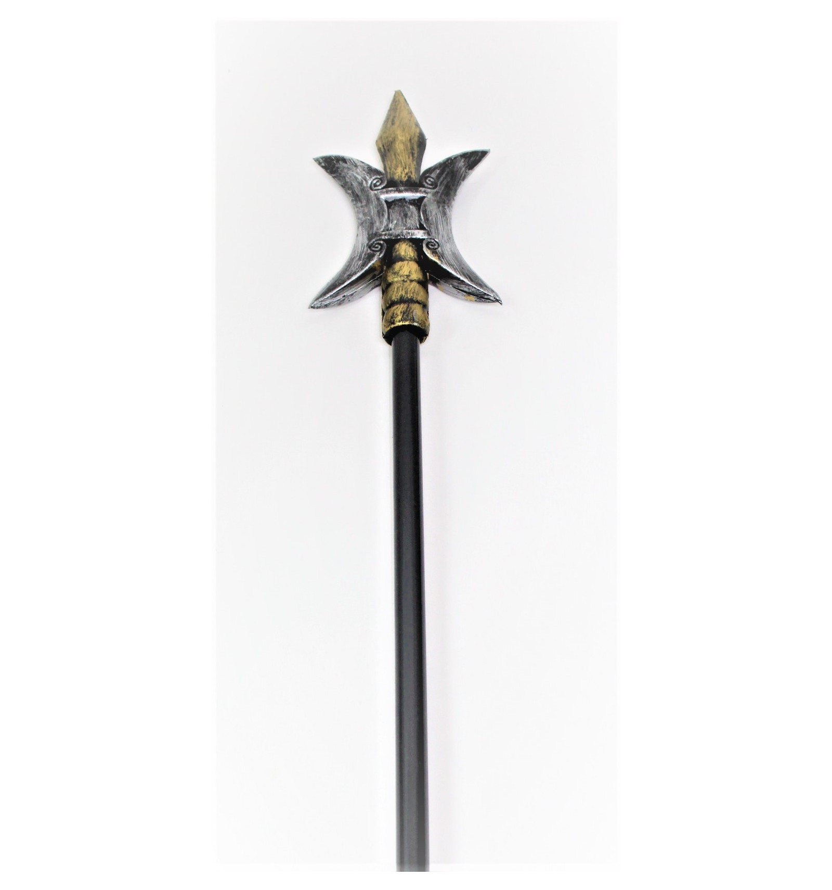

Victoria Aveyard — Stiklo kalavijas – Mainyk lietuviškas EPUB ir PDF elektronines bei Audio knygas
2020.10.29 10:31
Mainyk lietuviškas EPUB ir PDF elektronines bei Audio knygas
Nemokamos lietuviškos elektroninės bei audio knygos skaityklėms Kindle, EPUB, PDF ir MP3 formatais mainais į jūsų turimą Pereiti prie turinio Pradžia Apie knygų mainus Geriausios knygos 2020 m Geriausios knygos 2019 m. Geriausios knygos 2018 m. Geriausios knygos 2017 m. Geriausios knygos 2016 m. Geriausios knygos 2015 m. Geriausios knygos 2014 m. Geriausios knygos 2013 m. Geriausios knygos 2012 m. Geriausios knygos 2011 m. Geriausios knygos 2010 m. Geriausios knygos 2009 m. Geriausios knygos 2008 m. Geriausios knygos 2007 m. Geriausios knygos 2006 m. Geriausios knygos 2005 m. Geriausios knygos Užklausa mainymui Visos knygos
Victoria Aveyard — Stiklo kalavijas
pagal | Komentarų: 0
Jei aš kalavijas,
tai nukaltas iš stiklo.
Nes pradedu aižėti
Viena, ką Mara Barou tikrai žino – ji yra kitokia.
Maros kraujas raudonas kaip prasčiokų, bet ji turi gebėjimų, būdingų kilmingiesiems sidabriniams: gali valdyti žaibą. Dėl to mergina tampa grėsmingu ginklu, jos gviešiasi karaliaus rūmai. Valdžios atstovai tvirtina, kad tokie kaip Mara nepasižymi jokiais gebėjimais, kad ji tėra apgavikė, bet pasprukusi nuo princo Maveno, niekingo išdaviko, mergina sužino pribloškiančią tiesą: ji ne vienintelė tokia.
Persekiojama kerštingojo Maveno, pasiskelbusio karaliumi, Mara ryžtasi surasti kitus pusiau raudonuosius, pusiau sidabrinius kovotojus ir įtraukti juos į maištą prieš engėjus. Jos pasirinktas kelias pavojingas, žengdama juo, mergina rizikuoja tapti tokia pačia pabaisa kaip tas, kurį ji siekia įveikti. Ar išvydusi, kiek gyvybių kainuoja maištas, Mara ims dvejoti ? O gal klasta ir apgaulė užgrūdins ją?
Jaudinantis, vaizdingas trileris, kuriame susiduria meilė ir revoliucija, į dvikovą stoja galia ir teisingumas. Iš karto sudominantis. Kupinas veiksmo. Toks, kad negali atsitraukti.
„USA Today“
(Visited 58 times, 1 visits today)Panašios knygos:
Victoria Aveyard — Raudonoji karalienė Victoria Aveyard — Karaliaus narvas Sapkowski, Andrzej - Likimo kalavijas (FKB 1) Telksnytė Milda ir Vygandas Račkaitis - Daumanto kalavijas David Gemmell — Paskutinis galios kalavijas Andrzej Sapkowski — Likimo kalavijas. Raganius. 2 dalis Tema: Romanai Žymos: EPUB , PDF Įrašo navigacija ← Antonia Michaelis — Pasakininko istorija: kai meilė peržengia ribas Philippa Gregory — Laumės vaikasKnygų paieška
Knygų kategorijos
Apsakymai (207) Atviros Lietuvos knyga (ALK) (13) Biografijos (302) Detektyvai (1 025) Drama (136) Drąsiųjų keliai (75) Erotika (92) Fantastika (1 214) Filosofija (196) Garsiausios XXa. pabaigos knygos (16) Grožinė literatūra (1 236) Horizontai (8) Humoras (87) Iliustruota Didžioji Klasika (IDK) (4) Istorinė (708) J.R.R.Tolkieno mokiniai (8) Karas (23) Klasika (274) Konanas (5) Laisvalaikio skaitiniai (5) Lietuviška fantastikos biblioteka (LFB) (4) Lietuvos rašytojai (472) Lietuvos ryto kolekcija (27) Meilės romanai (1 729) Mistika (17) Mokinio skaitiniai (5) Nuotykinė (158) Paaugliams (212) Pasaulinės Fantastikos Aukso Fondas (PFAF) (497) Pasaulinės Fantastikos Lobynas (PFL) (38) Pasaulinės Literatūros Biblioteka (PLB) (2) Pažintinė (454) Poezija (265) Psichologija (476) Publicistika (383) Religija (149) Romanai (2 941) Saviugda (483) Siaubo (93) Socialiniai mokslai (134) Sveikata (196) Trileriai (200) Uncategorized (1) Vaikams (1 255) Verslas (137) Vorų pasaulis (16) Z-7 (6) Zenitas (60)Knygų žymos
1971 1972 1976 1980 1983 1984 1988 1989 1990 1991 1992 1993 1994 1995 1996 1997 1998 1999 2000 2001 2002 2003 2004 2005 2006 2007 2008 2009 2010 2011 2012 2013 2014 2015 2016 2017 2018 2019 2020 Audiobook (Audio knyga) EPUB EPUB (Pataisyta) EPUB (Sutvarkyta) Geriausios PDFNaujausios knygos
Heather Morris — Cilkos kelias Justin Cronin — Veidrodžių miestas Haruki Murakami — Prisukamo paukščio kronikos Bruno Bettelheim — Kodėl mums reikia stebuklo: Pasakų reikšmė ir svarba: Psichoanalitinis požiūris Liu Cixin — Trijų kūnų problema Anne Golon & Serge Golon — Anželikos gundymas Jessica Gilmore — Mūsų meilė tobula Jessica Gilmore — Tu – mano svajonė Guillermo Arriaga — Laukinis Jullie L. Hall — Narcizas tavo gyvenime Marina Stepnova — Sodas Heather Morris — Aušvico tatuiruotojasPopuliariausios knygos
Haddon, Mark -Tas keistas nutikimas šuniui naktį Vincas Mykolaitis-Putinas — Altorių šešėly Kazys Binkis — Atžalynas Remarque, Erich Maria trys draugai Shakespeare William Hamletas Astrid Lindgren — Mijo, mano Mijo Astrid Lindgren — Ronja plėšiko duktė Tolkien John Ronald Reuel Hobitas, arba Ten ir atgal Camus Albert Maras Neradote knygos? Skaityti čia Iconic One Theme | Powered by Wordpress- Kalavijas - vertimas - Lietuvių-Anglų Žodynas - Glosbe
- Vyksta tarptautinės SOP pratybos „Liepsnojantis kalavijas ...
- kalavijas - lithuanian_language.enacademic.com
- kalavijas - išsamiai DELFI.lt
- Kalavijas - vertimai, sinonimai, gramatika, statistika ...
- Likimo kalavijas - Andrzej Sapkowski | VAGA
- Liepsnojantis kalavijas. Legenda - Lietuvos kariuomenė
- Daumanto kalavijas - Pagrindinis
- Kalavijas (schiavona) | Nacionalinis muziejus Lietuvos ...
- Sapkowski, Andrzej – Likimo kalavijas (FKB 1) – Mainyk ...
- Kalavijas - vertimas - Lietuvių-Anglų Žodynas - Glosbe
Jei aš kalavijas, tai nukaltas iš stiklo. Nes pradedu aižėti… Viena, ką Mara Barou tikrai žino – ji yra kitokia. Maros kraujas raudonas kaip prasčiokų, bet ji turi gebėjimų, būdingų kilmingiesiems sidabriniams: gali valdyti žaibą.
- Vyksta tarptautinės SOP pratybos „Liepsnojantis kalavijas ...
kalavìjas sm. (2) 1. SD41,147, MŽ, R, KlG2, [K], J.Jabl, M, NdŽ plieninis, ilgas, siauras, aštriais ašmenimis kertamasis ginklas, kardas: Žemaitis už ...
- kalavijas - lithuanian_language.enacademic.com
Kalavijas bulgariškai. Vertimas - Žodynas: dictionaries24.com. Kalbų žodynas: lietuvių » bulgarų
- kalavijas - išsamiai DELFI.lt
Kalavijas (schiavona) Venetas, Italija XVII a. I p. Geležis, oda, medis; drožyba, kalstymas Ilgis 106 cm Inv. Nr. VR-365 Eksponatą 2008 m. rugsėjo 20 d. iš Riccardo Mannino (Merkatalė in Val di Peza, Italija) būsimam Valdovų rūmų muziejui įsigijo Lietuvos dailės muziejus. 2009 m. gegužės 27 d. jis perduotas Nacionaliniam muziejui Lietuvos Didžiosios Kunigaikštystės valdovų ...
- Kalavijas - vertimai, sinonimai, gramatika, statistika ...
Likimo kalavijas . Maginės fantastikos knygų ciklo „Raganius“ autorius Andrzej Sapkowski gimė Lenkijoje 1948 m. Išgarsėjęs dar pirmu apsakymu „Raganius“, jis parašė apie raganių Geraltą tris apsakymų rinkinius ir penkis romanus, jie išversti į daugelį kalbų. 2007 m. pagal „Raganiaus“ ciklą sukurtas kompiuterinis žaidimas „The Witcher“ irgi sulaukė pasaulinės ...
- Likimo kalavijas - Andrzej Sapkowski | VAGA
Taip prieštarų sandūroje gimstantis, vertybėmis išgaląstas mąstymas ir matymas - liepsnojantis Cherubinas, mūsų kariuomenės strategijos ir lyderystės kalavijas - taps viena stipriausių, mano gyvenimui kryptį suteikiančių, jėgų, kurias užtvirtins galutinė plieno ornamentika: Trispalvė Lietuvos Ugnis.
- Liepsnojantis kalavijas. Legenda - Lietuvos kariuomenė
Kalavijas vertimo žodynas lietuvių - anglų Glosbe, žodynas, nemokamai. Peržiūrėti milions žodžius ir frazes visomis kalbomis.
- Daumanto kalavijas - Pagrindinis
Vakarų pasaulyje kalavijas vaizduojamas kaip arkangelo Mykolo ginklas. Jis taip pat yra karaliaus Dovydo ir Juditos bei Juditos, kuri kalaviju nukirto galvą Holofernui, atributas. Evangelijoje pagal Joną iš Kristaus burnos išlenda kalavijas (1, 16) kaip simbolis nenugalimos jėgos ir dangiškosios teisybės, kaip žaibas perskrodžiančios ...
- Kalavijas (schiavona) | Nacionalinis muziejus Lietuvos ...
Žodis kalavijas angliškai verčiamas - sword. Lietuvių anglų žodynas. Anglų - Lietuvių; Lietuvių - Anglų; Išversti. Žodžių indeksas: a ...
- Sapkowski, Andrzej – Likimo kalavijas (FKB 1) – Mainyk ...
Labai tikroviškas kalavijasDydis: 80 cmDerinkite su riterio karnavalo kostiumu. Puikiais tiks ir Žiedų valdovo tematikai.Nepamirškite dirbtino kraujo ir riterio vertybių, taip pat pasitreniruokite, kaip nudobti drakoną
Jei aš kalavijas, tai nukaltas iš stiklo. Nes pradedu aižėti… Viena, ką Mara Barou tikrai žino – ji yra kitokia. Maros kraujas raudonas kaip prasčiokų, bet ji turi gebėjimų, būdingų kilmingiesiems sidabriniams: gali valdyti žaibą.
kalavìjas sm. (2) 1. SD41,147, MŽ, R, KlG2, [K], J.Jabl, M, NdŽ plieninis, ilgas, siauras, aštriais ašmenimis kertamasis ginklas, kardas: Žemaitis už ...
Kalavijas bulgariškai. Vertimas - Žodynas: dictionaries24.com. Kalbų žodynas: lietuvių » bulgarų
Kalavijas (schiavona) Venetas, Italija XVII a. I p. Geležis, oda, medis; drožyba, kalstymas Ilgis 106 cm Inv. Nr. VR-365 Eksponatą 2008 m. rugsėjo 20 d. iš Riccardo Mannino (Merkatalė in Val di Peza, Italija) būsimam Valdovų rūmų muziejui įsigijo Lietuvos dailės muziejus. 2009 m. gegužės 27 d. jis perduotas Nacionaliniam muziejui Lietuvos Didžiosios Kunigaikštystės valdovų ...
Likimo kalavijas . Maginės fantastikos knygų ciklo „Raganius“ autorius Andrzej Sapkowski gimė Lenkijoje 1948 m. Išgarsėjęs dar pirmu apsakymu „Raganius“, jis parašė apie raganių Geraltą tris apsakymų rinkinius ir penkis romanus, jie išversti į daugelį kalbų. 2007 m. pagal „Raganiaus“ ciklą sukurtas kompiuterinis žaidimas „The Witcher“ irgi sulaukė pasaulinės ...
Taip prieštarų sandūroje gimstantis, vertybėmis išgaląstas mąstymas ir matymas - liepsnojantis Cherubinas, mūsų kariuomenės strategijos ir lyderystės kalavijas - taps viena stipriausių, mano gyvenimui kryptį suteikiančių, jėgų, kurias užtvirtins galutinė plieno ornamentika: Trispalvė Lietuvos Ugnis.
Kalavijas vertimo žodynas lietuvių - anglų Glosbe, žodynas, nemokamai. Peržiūrėti milions žodžius ir frazes visomis kalbomis.
Vakarų pasaulyje kalavijas vaizduojamas kaip arkangelo Mykolo ginklas. Jis taip pat yra karaliaus Dovydo ir Juditos bei Juditos, kuri kalaviju nukirto galvą Holofernui, atributas. Evangelijoje pagal Joną iš Kristaus burnos išlenda kalavijas (1, 16) kaip simbolis nenugalimos jėgos ir dangiškosios teisybės, kaip žaibas perskrodžiančios ...
Žodis kalavijas angliškai verčiamas - sword. Lietuvių anglų žodynas. Anglų - Lietuvių; Lietuvių - Anglų; Išversti. Žodžių indeksas: a ...
Labai tikroviškas kalavijasDydis: 80 cmDerinkite su riterio karnavalo kostiumu. Puikiais tiks ir Žiedų valdovo tematikai.Nepamirškite dirbtino kraujo ir riterio vertybių, taip pat pasitreniruokite, kaip nudobti drakoną
  